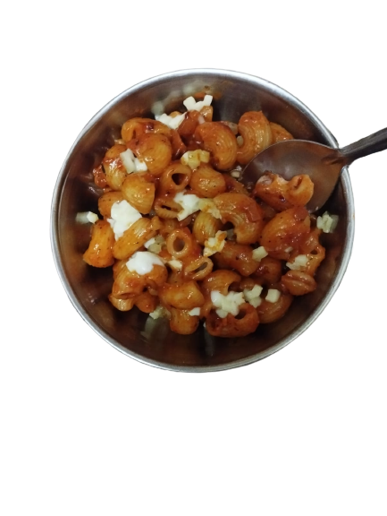

A College students anywhere,anytime Food
Pasta is my cozy food, whenever i get peckish it is easy to whip up.
It only needs few Ingredrients and can be quickly made anytime.
Good to eat while watching shows and binging anime.
Ingredrients required are:
- Pasta
- Pasta Masala
- Tomato
- Onion
- Salt
- Pepper
- Oil
Steps Required:-
- Wash the pasta.
- Boil pasta and tomatoes, add oil salt while they are boiling.
- Saute Onions.
- Grind the tomatoes to make tomato puree.
- In new pan Mix pasta,tomato puree and onions
- Add pasta masala and stir well.
- Cook till desired consistancy is achieved.
- Enjoy it while binging some shows!
Return to Top
Return to Main page